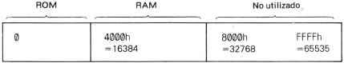
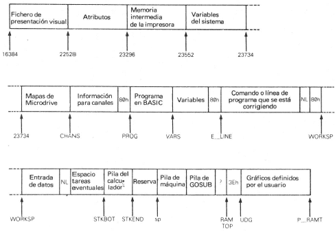
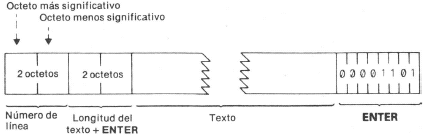
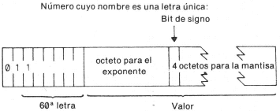
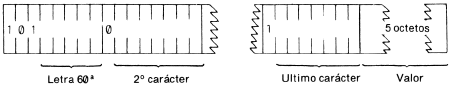
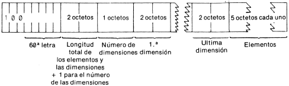
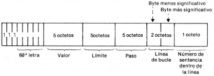
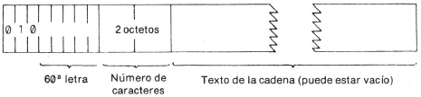
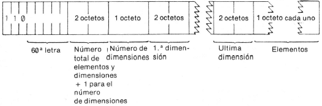
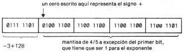

Manual de Basic Spectrum 48k. |
|
Capítulo 24
La memoriaResumen
En las profundidades del ordenador, todo se almacena en octetos (bytes), como, por ejemplo, los números entre 0 y 255. Se puede creer que se ha almacenado el precio de la lana o la dirección del vendedor de fertilizantes, pero todo ha sido convertido a conjuntos de octetos y lo único que el ordenador ve son octetos. Todo lugar donde se puede almacenar un octeto posee una dirección, que es un número comprendido entre 0 y FFFFh (de modo que cualquier dirección puede almacenarse como un par de octetos), de modo que se puede considerar la memoria como si fuera una larga fila de casillas numeradas, cada una de las cuales puede contener su octeto (byte). Sin embargo, no todas las casillas son iguales, pues en la máquina estándar de 16K RAM las casillas numeradas del 8000h al FFFFh (1) faltan al completo. Las casillas del 4000h al 7FFFh son casillas de RAM, lo que quiere decir que se puede levantar la tapa y cambiarle el contenido. Finalmente, aquellas numeradas del 0 al 3FFFh son casillas ROM, que están "recubiertas" de cristal y que no pueden abrirse. Todo lo que se puede hacer es leer lo que se depositó allí cuando se fabricó el ordenador. 
Para inspeccionar el contenido de una casilla, empleamos la función PEEK: su argumento es la dirección de la casilla y su resultado el contenido. Por ejemplo, el programa siguiente imprime los primeros 21 octetos de la ROM (y sus direcciones):
Es probable que todos estos octetos carezcan de significado para el lector, pero la pastilla procesadora los entiende como instrucciones que le indican qué hacer. Para variar el contenido de una casilla (si es de RAM), empleamos la sentencia POKE (introducir), cuya forma es POKE dirección, nuevo contenido
en donde la "dirección" y el "nuevo contenido" representan expresiones numéricas. Por ejemplo, si se dice POKE 31000, 57
al octeto de la dirección 31000 se le da el nuevo valor 57. Escríbase PRINT PEEK 31000
para probarlo. (Trate de ejercer la función POKE con otros valores para comprobar que no hay trampa). Los nuevos valores han de estar comprendidos entre -255 y +255 y si el elegido es negativo, entonces, se le añade 256. La función POKE otorga un poder "inmenso" sobre el ordenador siempre que se la sepa emplear y posibilidades destructoras enormes si no se sabe. Es muy fácil echar a perder un programa que costó horas de teclado, mediante el ejercicio de POKE con un valor incorrecto en una dirección equivocada. Afortunadamente, ello no producirá al ordenador ningún daño permanente. Echaremos, ahora, un vistazo más detallado a la manera en que se usa la RAM, pero no se moleste en leerlo si no le interesa el tema. La memoria está dividida en zonas diferentes (que se muestran en el diagrama grande) para almacenar distintos tipos de información. Estas zonas son sólo suficientemente grandes para contener la información que contienen realmente, por lo que si se añade algo más en algún punto determinado (por ejemplo, incluyendo una línea de programa o una variable) se hace sitio empujando hacia arriba todo lo que queda por encima de este punto. Y al contrario si se borra información, entonces todo se empuja hacia abajo. El archivo para la representación en pantalla almacena una imagen de televisión. Resulta bastante curioso el modo en que está presentado, por lo que es probable que se prefiera no ejercer en ella las funciones PEEK y POKE. Cada carácter de la pantalla posee un cuadrado de 8x8 puntos y cada punto puede tomar el valor 0 (papel) ó 1 (tinta): así, utilizando la notación binaria se puede almacenar la configuración como 8 octetos, uno para cada fila. Sin embargo, estos 8 octetos no se almacenan juntos, sino que lo hacen las filas correspondientes de los 32 caracteres de una línea sencilla, como una traza de 32 octetos, ya que esto es lo que necesita el haz electrónico de la televisión a medida que barre la pantalla de izquierda a derecha. Como quiera que la imagen completa tiene 24 líneas de 8 barridos cada una, podría esperarse que hubiera que almacenar 172 barridos en total correlativos, pero no es verdad. Primero vienen las trazas superiores de las líneas 0 y 7, después, el siguiente barrido de las mismas líneas de 0 a 7 y así hasta llegar a la línea inferior de las citadas líneas de 0 a 7. A continuación, se repite el mismo proceso para las líneas de 8 a 15 y, tras ello, se hace lo mismo con las líneas de 16 a 23. El resultado final de todo esto es que si estamos habituados a un ordenador que usa las funciones PEEK y POKE en la pantalla, habrá que cambiarse a usar SCREEN$ y PRINT AT en su lugar, o PLOT y POINT. Los atributos son los colores, etc., para cada posición de carácter, mediante el uso de ATTR. Todo ello se almacena línea tras línea en el orden que se espera. La memoria temporal de la impresora almacena los caracteres destinados a impresión. Las variables del sistema contienen varios elementos de información que indican al ordenador en qué estado se halla. Como están completamente listadas en el capítulo próximo, nos conformaremos por el momento con destacar que existen algunas (llamadas CHANS, PROG, VARS, E_LINE, etc.) que contienen las direciones de los límites entre !as diversas zonas de la memoria. No son variables de BASIC, por lo que sus nombres no serán identificados por el ordenador. 
Los mapas de la unidad Microdrive sólo existen cuando se utiliza este dispositivo, por lo que, normalmente, sus posiciones están vacías. La zona para información de los canales contiene la información pertinente sobre los dispositivos de entrada y salida, es decir, el teclado (con la mitad inferior de la pantalla), la mitad superior de la pantalla y la impresora. Cada línea del programa BASIC tiene la forma: 
Nótese que, a diferencia con todos los demás casos de números representados con 2 bytes, en el Z80, el número de línea se almacenará aquí con el byte más significativo en cabeza: es decir, en el mismo orden en que se escriben. Cualquier constante numérica del programa va seguida de su forma binaria, empleando el carácter CHR$ 14 seguido de 5 bytes para el propio número. Las variables poseen formatos diferentes de acuerdo con sus distintas naturalezas. Las letras que componen los nombres deben ser imaginadas partiendo de las minúsculas: 
Número cuyo nombre es más largo que una letra: 
Matriz de números: 
El orden de los elementos es: primero, los elementos para los cuales el primer subíndice es 1, seguidamente, los elementos para los cuales el primer subíndice es 2 a continuación, los elementos para los cuales el primer subíndice es 3 y así sucesivamente para todos los valores posibles del primer subíndice. Los elementos con un primer subíndice dado se ordenan en la misma manera, empleando el segundo subíndice y así sucesivamente hasta alcanzar el último. Como ejemplo, los elementos de la matriz b de 3 * 6 del capítulo 13 se almacenan en orden b(1,1) b(1,2) b(1,3) b(1,4) b(1,5) b(1,6) b(2,1) b(2,2) ... b(2,6) b(3,1) b(3,2) ... b(3,6). Variable de control para un bucle FOR-NEXT: 
Cadenas 
Matriz de caracteres: 
El calculador es la parte del sistema BASIC que trata de la aritmética y los números con los que opera están contenidos en su mayoría en su pila de memoria. La parte sobrante contiene el espacio no usado hasta ahora. La pila de la máquina es la que usa el procesador del Z80 para contener las direcciones de retorno y elementos similares. La pila para GO SUB se mencionó ya en el capítulo 5. El byte hacia el que apunta RAMTOP tiene la dirección más alta que utiliza el sistema BASIC. Aún cuando NEW borra la RAM, lo hace sin alterar los gráficos definidos por el usuario. Se puede variar la dirección de RAMTOP poniendo un número en una sentencia CLEAR: CLEAR nueva RAMTOP
Esta sentencia
RUN también produce borrado como CLEAR, aunque nunca altera el valor de la RAMTOP. Utilizando de esta manera la instrucción CLEAR es posible tanto subir el límite RAMTOP de modo que se haga más sitio para el BASIC recubriendo los gráficos definidos por el usuario, como llevar el límite RAMTOP hacia abajo permitiendo más cantidad de RAM de la prevista en la instrucción NEW. Teclee NEW y después CLEAR 23800, para hacerse una idea de lo que ocurre en la máquina cuando se llena. Una de la primeras cosas que se notará cuando se comienza a escribir un programa es que el ordenador deja de aceptar entradas y hace sonar el zumbador. Esto significa que el ordenador está repleto y hay que vaciarlo ligeramente. Existen, además, dos mensajes de error cuyo significado es muy parecido: 4 Memory full (Memoria completa) y G No room for line (No hay sitio para más líneas). El zumbador suena también cuando se escribe una línea más larga de 23 líneas; sin embargo, el mensaje no se pierde, aunque no pueda verse (el zumbador suena como disuasión para escribir algo más). Se puede ajustar la duración del zumbido mediante la instrucción POKE en la dirección 23608. La duración normal correspondiente al número 64 puede ser sustituida por otro número. Cualquier número (a excepción del 0) puede escribirse únicamente como ± m x 2e
donde ± es el signo m es la mantisa y queda entre 1/2 y 1 (no puede ser 1), y e es el exponente, un número entero (posiblemente negativo). Supóngase que m se escribe en la escala binaria. Ya que es una fracción, poseerá un punto binario (como la coma, o punto, decimal en la escala de diez) seguido de una fracción binaria (igual que una fracción decimal); así, en binario un medio se escribe .1 un cuarto se escribe .01 tres cuartos se escriben .11 una décima se escribe .000110011001100110011 ... etc. Nuestro número m, es menor que la unidad, por lo que su representación binaria carece de cifras antes del punto (coma en español) decimal. Y como quiera que su menor valor es 1/2, el bit que sigue inmediatamente al punto (coma en español) decimal es siempre un 1. Para almacenar un número en el ordenador, disponemos de 5 octetos (bytes), de la manera que sigue:
Entonces, la mantisa m es 11001100110011001100110011001100 en binario (como el bit 33° es un 1, redondearemos el bit 32° de 0 a 1) y el exponente e es -3. Aplicando las 3 reglas anteriores, encontramos los cinco octetos: 
Existe un método alternativo para almacenar números enteros comprendidos entre -65535 y +65535:
(1) Nota: La letra h significa que está en hexadecimal. |
Manual de Basic Spectrum 48k. |